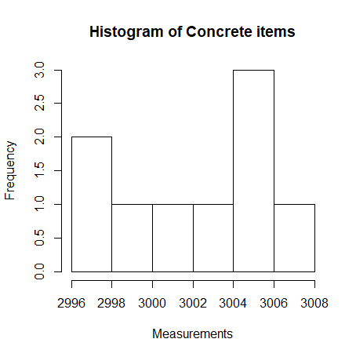
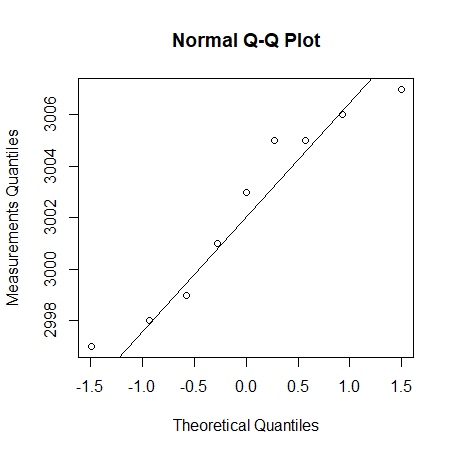

3 Hypothesis Testing
3.3 Concrete items
A construction company receives concrete items for a construction. The length of the items are assumed reasonably normally distributed. The following requirements for the length of the elements are made \mu=3000mm. The company samples 9 items from a delivery which are then measured for control. The following measurements (in mm) are found: 3003, 3005, 2997, 3006, 2999, 2998, 3007, 3005, 3001.
a)
To investigate whether the requirement to the mean is fulfilled (with \alpha= 5% ), the following hypothesis should be tested
Or similarly asked: what is the evidence against the null hypothesis?
We know that:
By using Method 3.36
1.
$$
t_{obs}= \frac{\bar{x}-\mu_{0}}{s/\sqrt{n}}=1.88749
$$
> (3002.333-3000)/(3.708099/sqrt(9))
[1] 1.88749
2. $$ \text{p-value}= 2*P(T>|t_{obs}|) = 0.09579526 $$
> 2*(1-pt(1.88749, df=8))
[1] 0.09579526
3. Conclusion:
\text{p-value} (0.096) is more than \alpha (0.05), so we can accept H_{0}
Note that we can produce same result by using t.test in R
> t.test(sample, mu=3000)
One Sample t-test
data: sample
t = 1.8878, df = 8, p-value = 0.09576
alternative hypothesis: true mean is not equal to 3000
95 percent confidence interval:
2999.483 3005.184
sample estimates:
mean of x
3002.333
b)
What would the level $\alpha = 0.01 $ critical values be for this test, and what are the interpretation of these?
> qt(0.005, df=8)
[1] -3.355387
> qt(0.995, df=8)
[1] 3.355387
- We can reject H_0 if the observed test-statistics (t_{obs}) is more extreme than the calculated critical value with the significance level of \alpha=0.01
c)
What would the level \alpha=0.05 critical values be for this test (compare also with the values found in the previous question)?
> qt(0.05/2, df=8)
[1] -2.306004
> qt(1-0.05/2, df=8)
[1] 2.306004
- Critical values get closer to each other as the \alpha increases.
d)
Investigate, by some plots, whether the data here appears to be coming from a normal distribution (as assumed until now)?
hist(sample, main = "Histogram of Concrete items", xlab= "Measurements")

qqnorm(sample, ylab="Measurements Quantiles")
qqline(sample)

qqwrap <- function(x, y, ...){
stdy <- (y-mean(y))/sd(y)
qqnorm(stdy, main="", ...)
qqline(stdy)}
wallyplot(x-mean(sample), FUN=qqwrap, ylim=c(-3,3))
e)
Assuming that you, maybe among different plots, also did the normal q-q plot above, the question is now: What exactly is plotted in that plot? Or more specifically: what are the x- and y-coordinates of e.g. the two points to the lower left in this plot?
- X coordinates represent the expected normal quantiles.
- Y coordinates represent the sample quantiles.
For example, the point ( 0, 3002.333 ) represents respectively the 0.5 quantiles of the expected normal distribution and the sample.
3.4 Aluminum profile
The length of an aluminum profile is checked by taking a sample of 16 items whose length is measured. The measurement results from this sample are listed below, all measurements are in mm: 180.02, 180.00, 180.01, 179.97, 179.92, 180.05, 179.94, 180.10,180.24, 180.12, 180.13, 180.22, 179.96, 180.10, 179.96, 180.06 . From data is obtained: $\bar{x}=180.05 $ and s = 0.0959 . It can be assumed that the sample comes from a population which is normal distributed.
a)
Find the evidence against the following hypothesis:
> t.test(aluminum, mu=180)
One Sample t-test
data: aluminum
t = 2.0851, df = 15, p-value = 0.05456
alternative hypothesis: true mean is not equal to 180
95 percent confidence interval:
179.9989 180.1011
sample estimates:
mean of x
180.05
\text{p-value} (0.05452038) is more than 0.05, but less than 1, so there is a weak evidences against H_{0}.
b)
If the following hypothesis test is carried out
What are the level \alpha= 1% critical values for this test?
> qt(0.005, df=16-1)
[1] -2.946713
> qt(0.995, df=16-1)
[1] 2.946713
c)
What is the 99%-confidence interval for \mu?
> qt(0.995,15)
[1] 2.946713
d)
Carry out the following hypothesis test using \alpha=5\%
We know that:
By using Method 3.36
1.
$$
t_{obs}= \frac{\bar{x}-\mu_{0}}{s/\sqrt{n}}= 2.085506
$$
> (180.05-180)/(0.0959/sqrt(16))
[1] 2.085506
2. $$ \text{p-value}= 2*P(T>|t_{obs}|) = 0.05452038 $$
> 2*(1-pt(2.085506, df=15))
[1] 0.05452038
3. Conclusion:
\text{p-value} (0.05452038) is more than \alpha (0.05), so we can accept H_{0}.
> t.test(aluminum, mu=180)
One Sample t-test
data: aluminum
t = 2.0851, df = 15, p-value = 0.05456
alternative hypothesis: true mean is not equal to 180
95 percent confidence interval:
179.9989 180.1011
sample estimates:
mean of x
180.05
\text{p-value} (0.05452038) is more than 0.05, but less than 1, so there is weak evidences against H_{0}.